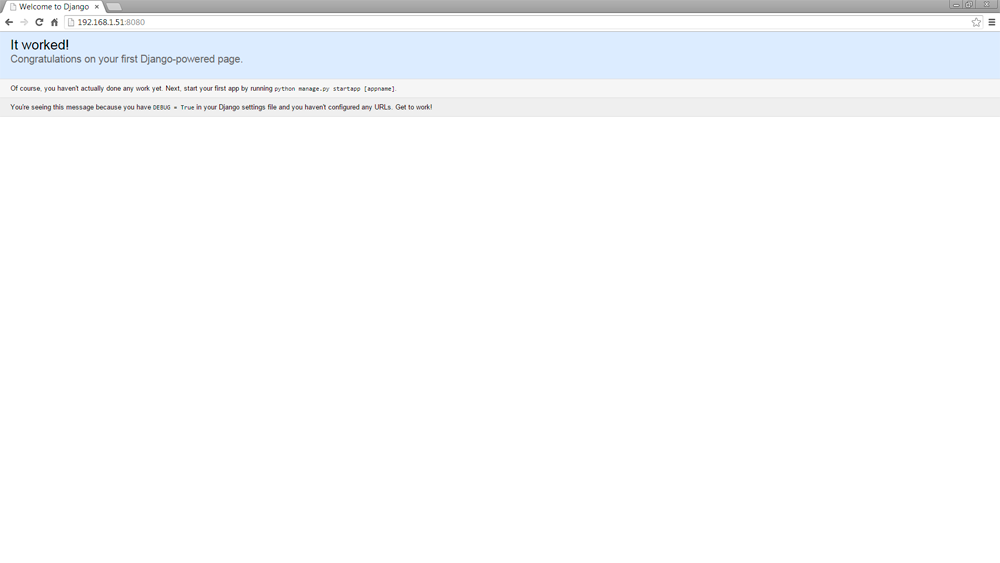

Эффективный Django. Часть 1
Представляю вам перевод статей о Django с сайта effectivedjango.com. Наткнулся я на этот сайт во время изучения данного фреймворка. Информация размещенная на этом ресурсе показалась мне полезной, но так как нигде не нашел перевода на русский, решил сделать сие доброе дело сам. Этот цикл статей, как мне думается, будет полезен веб-разработчикам, которые делают только первые шаги в изучении Django.
Оглавление
Введение ⇧
Django — это популярный, мощный фреймворк на языке Python. Он имеет множество "батареек", и позволяет сразу начать разработку. Однако вся эта мощь означает, что вы можете написать низкопробный код, который будет казаться рабочим. Так что же подразумевается под Эффективным Django? Под Эффективным Django будем понимать использование Django таким образом, чтобы написанный код был связным, тестируемым и масштабируемым. Что же каждое из этих слов значит?
"Связный" код — это код, который сосредоточен на выполнении одной вещи, только одной единственной вещи. Это значит, что когда вы пишете функцию или метод — написанный вами код должен делать что-то одно и делать это хорошо.
Это непосредственно относится к написанию тестируемого кода: код, который делает много вещей, достаточно часто является чересчур сложным для тестирования. Когда я ловлю себя на мысли: «Хорошо, этот кусок кода слишком сложен, чтобы писать для него тесты — это просто не стоит потраченных усилий» — вот сигнал к тому, чтобы вернутся назад и сосредоточиться на упрощении. Тестируемый код — такой код, который позволяет просто писать для него тесты; код, в котором легко найти проблемы.
И наконец, мы хотим писать масштабируемый код. Это означает не просто масштабировать его в терминах исполнения, но так же увеличивать в терминах команды и командного понимания. Хорошо протестированные приложения проще для понимания другими (и проще для изменения ими), что подразумевает большую возможность улучшить ваше приложение, путем добавления новых инженеров.
Моя цель — убедить вас в важности этих принципов, и предоставить примеры того, как следуя им, построить более стойкое Django-приложение. Я собираюсь последовательно пройти через процесс построения приложения для управления контактами, рассказывая про решения и стратегию тестирования, которые я использую.
Эти документы являются сочетанием заметок и примеров подготовленных для PyCon 2012, PyOhio 2012, и PyCon 2013, а также для web-разработки Eventbrite. Я все еще работаю над объединением их в один документ, но надеюсь вы найдете их полезными.
Примеры кода для этого руководства доступны на github'е. Отзывы, предложения и вопросы можете присылать на nathan@yergler.net.
Этот документ доступен на сайте, а также в форматах PDF и EPub.
Видео этого руководства с PyCon можно посмотреть на YouTube.
Глава 1. Приступая к работе ⇧
1.1. Ваша среда разработки
Когда ведется разговор о вашей среде разработки, существует три важных факта, которые необходимо иметь в виду: изоляция, предопределенность и сходство. Каждый из них важен и все они взаимодействуют друг с другом согласованно.
Изоляция означает, что вы не сможете случайно воспользоватся инструментами или пакетами установленными вне вашего окружения. Это особенно важно, когда подобное происходит с чем-то, похожим на пакеты Python с расширениями написанными на C: если вы используете что-то установленное на системном уровне и не знаете об этом, то при развертывании или распространении своего кода вы можете обнаружить, что он работает не так как предполагалось. Инструменты наподобие virtualenv могут помочь создать нечто похожее на изолированную среду.
Ваша среда предопределена, если вы уверены в том, на какую версию ваших зависимостей вы полагаетесь и сможете ли вы наверняка воспроизвести системное окружение.
И на конец, сходство с производственной средой или средой сервера разработки означает, что везде установлена одна и та же операционная система (возможно даже одинаковый выпуск) и вы используете одинаковые инструменты как для конфигурирования вашей среды разработки, так и для конфигурирования вашей производственной среды. Это отнюдь не необходимость, но если вы строите большое и сложное программное обеспечение — сходство будет полезно для уверенности в том, что все проблемы, которые вы можете увидеть на «боевом» сервере, воспроизводимы в той среде, где вы ведете разработку. К тому же сходство ограничивает область исследования вашего кода.
1.1.1. Изоляция
1.1.2. Предопределенность
Вы можете точно определить версии используя либо версию пакета на PyPI, либо же определенную ревизию (SHA в git, номер ревизии в Subversion и т. д.). Это гарантирует вам возможность получить в точности те же версии пакетов, которые вы используете при тестировании.
1.1.3. Сходство
1.2. Настройка вашего окружения
1.2.1. Создание чистого рабочего пространства
Примечание переводчика:
Для начала создадим каталог (tutorial), в котором будем работать:
~$ mkdir tutorial
~$ cd tutorial
~/tutorial$ mkdir venv project
В каталоге venv будет находится наше виртуальное окружение, а в каталоге project — Django-проект
~/tutorial$ virtualenv --prompt="(venv:tutorial)" ./venv/
New python executable in ./venv/bin/python
Installing setuptools............done.
Installing pip...............done.
~/tutorial$ source ./venv/bin/activate
(venv:tutorial)~/tutorial$
1.2.2. Создание файла зависимостей
Создайте файл requirements.txt в директории tutorial с единственной строкой (зависимостью) в нем:
Django==1.6.7
Примечание переводчика:
В случае, если вы хотите использовать последнюю версию Django (1.7 — на момент написания перевода) — вместо строки Django==1.6.7 оставьте просто Django — pip установит последнюю доступную версию.
1.2.3. Установка зависимостей
А теперь мы можем использовать pip для установки зависимостей:
(venv:tutorial)~/tutorial$ pip install -U -r requirements.txt
Downloadping/unpacking Django==1.6.7 (from -r requirements.txt (line 1))
Downloading Django-1.6.7.tar.gz (6.6MB): 6.6MB downloaded
Running setup.py egg_info for package Django
warning: no previously-included files matching ’__pycache__’ found under directory ’*’
warning: no previously-included files matching ’*.py[co]’ found under directory ’*’
Installing collected packages: Django
Running setup.py install for Django
changing mode of build/scripts-2.7/django-admin.py from 644 to 755
warning: no previously-included files matching ’__pycache__’ found under directory ’*’
warning: no previously-included files matching ’*.py[co]’ found under directory ’*’
changing mode of /home/nathan/p/edt/bin/django-admin.py to 755
Successfully installed Django
Cleaning up...
1.3. Начало проекта Django
Когда здание находится в процессе постройки, строительные леса часто используются для поддержания структуры до того как строительство будет завершено. Строительные леса могут быть временными или они могут служить частью фундамента здания, но несмотря на это, они представляют некоторую поддержку когда вы только начинаете работу.
Django, как и многие web-фреймворки, представляет скаффолдинг для вашей разработки. Это происходит при помощи принятия решений и предоставления отправной точки для вашего кода, что позволяет вам сосредоточится на проблеме, которую вы пытаетесь решить, а не на том, как разобрать HTTP-запрос. Django предоставляет скаффолдинг как для работы с HTTP, так и для работы с файловой системой.
HTTP-скаффолдинг управляет, например, преобразованием HTTP-запроса в объект языка Python, а также предоставляет инструменты для более простого создания серверных ответов. Скаффолдинг файловой системы иной: это набор соглашений по организации вашего кода. Эти соглашения облегчают добавление новых инженеров в проект, так как инженеры (гипотетически) уже понимают как организован код. В терминах Django, проект — это конечный продукт, и он объединяет внутри себя одно или несколько приложений. В Django 1.4 было изменено то, как проекты и приложения размещаются на диске, что облегчило разъединение и повторное использование приложений в разных проектах.
1.3.1. Создание проекта
Django устанавливает в систему скрипт django-admin.py для обработки задач скаффолдинга. Для создания файлов проекта используется задача startproject. Мы определим имя проекта и имя директории, в которой хотим разместить проект. Так как, мы уже находимся в изолированной среде, можно просто написать:
Примечание переводчика:
Перейдем директорию ~/tutorial/project/ и в дальнейшем будем работать только из этой директории (под $ далее будем подразумевать ~/tutorial/project/$):
(venv:tutorial)~/tutorial/$ cd project
(venv:tutorial)$ django-admin.py startproject addressbook .
Созданный проект имеет следующую структуру
manage.py
./addressbook
__init__.py
settings.py
urls.py
wsgi.py
1.3.2. Скаффолдинг проекта
1.3.3. Создание приложения
(venv:tutorial)$ python ./manage.py startapp contacts
Созданное приложение имеет следующую структуру:
./contacts
__init__.py
models.py
tests.py
views.py
Примечание переводчика:
На текущий момент наша директория ~/tutorial/ содержит файл зависимостей (requirements.txt), директорию с виртуальным окружением (venv/), один проект (project/addressbook), одно приложение (project/contacts) и имеет следующее содержание:
~/tutorial/
requirements.txt
venv/
...
project/
manage.py
addressbook/
__init__.py
settings.py
urls.py
wsgi.py
contacts/
__init__.py
models.py
tests.py
views.py
Глава 2. Используем модель ⇧
2.1. Конфигурирование базы данных
Django поддерживает «из коробки» MySQL, PostgreSQL, SQLite3 и Oracle. SQLite3 входит в состав Python начиная с версии 2.5, так что мы будем использовать его в нашем проекте (для простоты). Если вы хотите, к примеру, использовать MySQL, то нужно добавить mysql-python в ваш requirements.txt.
Для того чтобы в качестве базы данных использовать SQLite, отредактируйте определение DATABASES в файле addressbook/settings.py. Файл settings.py содержит настройки Django для нашего проекта. В нем есть несколько настроек, которые вы обязаны указать — например DATABASES — а так же другие, необязательные, настройки. Django устанавливает некоторые настройки сам, когда генерирует проект. Документация содержит полный список настроек. К тому же вы можете добавить свои собственные настройки, если это необходимо.
Для использования SQLite нам нужно указать движок (ENGINE) и имя базы (NAME). SQLite интерпертирует имя базы как имя файла для базы данных:
DATABASES = {
'defaults': {
'ENGINE': 'django.db.backends.sqlite3,' # ’postgresql_psycopg2’, ’mysql’, ’sqlite3’ or ’oracle'.
'NAME': os.path.join(BASE_DIR, 'address.db'),
'USER': '', # Not used with sqlite3.
'PASSWORD': '', # Not used with sqlite3.
'HOST': '', # Set to empty string for localhost. Not used with sqlite3.
'PORT': '', # Set to empty string for default. Not used with sqlite3.
}
}
Заметьте, что движок базы данных указан строкой, а не прямой ссылкой на объект Python. Это сделано по той причине, что файл настроек должен быть легко импортирован не вызывая сторонних эффектов. Вы должны избегать добавления вызовов import в этот файл.
Вам редко придется непосредственно импортировать файл настроек: Django импортирует его за вас, и делает настройки доступными как django.conf.settings. Вы, как правило, импортируете настройки из django.conf:
from django.conf import settings
2.2. Создание модели
Модели Django отображают (грубо говоря) таблицы базы данных, и предоставляют место для инкапсулирования бизнес-логики. Все модели являются наследниками базового класса Model и содержат поля определений. Давайте создадим простую модель Contacts для нашего приложения в файле contacts/models.py:
from django.db import models
class Contact(models.Model):
first_name = models.CharField(
max_length=255,
)
last_name = models.CharField(
max_length=255,
)
email = models.EmailField()
def __str__(self):
return ' '.join([
self.first_name,
self.last_name,
])
Django предоставляет набор полей для отображения типов данных и различных правил валидации. К примеру, EmailField, который мы использовали, является отображением на колонку с типом CharField, но добавляет валидацию данных.
После того, как вы создали модель, необходимо дополнить вашу базу данных новыми таблицами. Команда Django syncdb смотрит установленные модели и создает (если нужно) таблицы для них:
Примечание переводчика:
Django предложит создать суперпользователя для андминки, которая включена в этой версии по умолчанию. Воспользуйтесь его предложением.
Примечание переводчика:
С версии Django 1.7 во фреймворк добавлена нативная поддержка миграций и команда syncdb объявлена устаревшей. Так что будьте так любезны, воспользуйтесь командой migrate вместо syncdb.
(venv:tutorial)$ python ./manage.py syncdb
Creating tables ...
Creating table django_admin_log
Creating table auth_permission
Creating table auth_group_permissions
Creating table auth_group
Creating table auth_user_groups
Creating table auth_user_user_permissions
Creating table auth_user
Creating table django_content_type
Creating table django_session
You just installed Django's auth system, which means you don't have any superusers defined.
Would you like to create one now? (yes/no): yes
Username (leave blank to use 'bjakushka'):
Email address:
Password:
Password (again):
Superuser created successfully.
Installing custom SQL ...
installing indexes ...
Installed 0 object(s) from 0 fixture(s)
(venv:tutorial)$
Примечание переводчика:
Если вы используете Django версии 1.7 и выше — вывод будет следующий:
(venv:tutorial)$ python ./manage.py migrate
Opperation to perform:
Apply all migrations: admin, contenttypes, auth, sessions
Running migrations:
Applying contenttypes.0001_initial... OK
Applying auth.0001_initial... OK
Applying admin.0001_initial... OK
Applying sessions.0001_initial... OK
(venv:tutorial)$
Однако нашей таблицы с контактами нигде не видно. Причина этого состоит в том, что нам нужно еще указать проекту использовать приложение.
Настройка INSTALLED_APPS содержит список приложений, используемых в проекте. Этот список содержит в себе строки, которые отображают пакеты Python. Django будет импортировать каждый из указанных пакетов, а потом смотреть модуль models. Давайте добавим наше приложение contacts в настройки проекта (addressbook/settings.py):
INSTALLED_APPS = (
'django.contrib.admin',
'django.contrib.auth',
'django.contrib.contenttypes',
'django.contrib.sessions',
'django.contrib.messages',
'django.contrib.staticfiles',
'contacts',
)
После этого запустите syncdb снова:
Примечание переводчика:
Для Django версии 1.7 и выше вам нужно будет запустить сначала команду makemigrations — для создания миграций на основе изменений в моделях, а после этого выполнить команду migrate — для того чтобы применить созданные миграции.
(venv:tutorial)$ python ./manage.py syncdb
Creating tables ...
Creating table contacts_contact
Installing custom SQL ...
Installing indexes ...
Installed 0 object(s) from 0 fixture(s)
(venv:tutorial)$
Примечание переводчика:
Вывод для Django 1.7 и выше:
(venv:tutorial)$ python ./manage.py makemigrations
Migrations for 'contacts':
0001_initial.py:
- Create model Contact
(venv:tutorial)$ python ./manage.py migrate
Opperation to perform:
Apply all migrations: admin, contenttypes, sessions, auth, contacts
Running migrations:
Applying contacts.0001_initial... OK
(venv:tutorial)$
Заметьте, что Django создает таблицу с именем contacts_contact: по умолчанию Dj ango дает таблицам имена используя комбинацию имени приложения и имени модели. Вы можете изменить это с помощью опций модели Meta.
2.3. Взаимодействие с моделью
Теперь, когда модель синхронизирована с базой данных мы можем взаимодействовать с нею используя интерактивную оболочку:
(venv:tutorial)$ python ./manage.py shell
Python 2.7.3 (default, Mar 14 2014, 11:57:14)
[GCC 4.7.2] on linux2
Type "help", "copyright", "credits" or "license" for more information.
(InteractiveConsole)
>>> from contacts.models import Contact
>>> Contact.objects.all()
[]
>>> Contact.objects.create(first_name='Nathan', last_name='Yergler')
<Contact: Nathan Yergler>
>>> Contact.objects.all()
[<Contact: Nathan Yergler>]
>>> nathan = Contact.objects.get(first_name='Nathan')
>>> nathan
<Contact: Nathan Yergler>
>>> print nathan
Nathan Yergler
>>> nathan.id
1
Здесь использовалось несколько новых штук. Во-первых, команда manage.py shell запускает для нас интерактивную оболочку Python'а с правильно установленными путями для Django. Если вы попробуете запустить интерпретатор Python и просто импортировать ваше приложения, будет выброшено исключение, потому что Django не знает, какие настройки использовать, и не может отобразить экземпляры модели на базу данных.
Во-вторых, здесь использовалось свойство objects нашей модели. Это менеджер модели. Так, если один экземпляр модели является аналогией для строки в базе, то менеджер модели — аналогией для таблицы. По умолчанию менеджер модели предоставляет функциональность запросов и может быть настроен. Когда мы вызываем all(), filter() или сам менеджер, возвращается объект QuerySet. QuerySet является итерируемым объектом и загружает данные из базы по необходимости.
И последнее — выше использовалось поле с именем id, которое мы не определяли в нашей модели. Django добавляет это поле как первичный ключ для модели, но только в том случае если вы сами не определили какое поле будет первичным ключом.
2.4. Написание тестов
В нашей модели определен один метод, __str__, так что настало время писать тесты. Метод __str__ будет использоваться всего лишь в нескольких местах, и, вполне возможно, полностью будет показан конечному пользователю. Для этого метода стоит написать тест, пока мы понимаем как он работает. Django создал файл tests.py когда создавал приложение, так что мы добавим первый тест в этот файл, приложения contacts.
from django.test import TestCase
from contacts.models import Contact
class ContactTests(TestCase):
"""Contact model tests."""
def test_str(self):
contact = Contact(first_name='John', last_name='Smith')
self.assertEquals(
str(contact),
'John Smith',
)
Вы можете запустить тесты для вашего приложения используя команду manage.py test:
(venv:tutorial)$ python ./manage.py test
Если вы запустите это, то увидите что выполнилось около 420 тестов. Это удивляет, так как мы написали только один. Произошло это потому, что по умолчанию Django запускает тесты для всех установленных приложений. Когда вы добавляли приложение contacts в наш проект, то могли увидеть, что там по умолчанию были добавлены несколько встроенных приложений Django. Дополнительные 419 тестов были взяты оттуда.
Примечание переводчика:
В нашем случае (при использовании версии Django 1.6.7) предыдущий абзац несколько устарел: запустится только один тест — тот который мы создали. Вывод команды будет такой как указано ниже.
Если же вы захотите запустить тесты для определенного приложения — укажите имя приложения в команде:
(venv:tutorial)$ python manage.py test contacts
Creating test database for alias ’default’...
.
----------------------------------------------------------------------
Ran 1 tests in 0.001s
OK
Destroying test database for alias ’default’...
(venv:tutorial)$
Еще одна интересная вещь на заметку, прежде чем двигаться дальше — первая и последняя строка вывода: Creating test database и Destroying test database. Некоторым тестам необходим доступ к базе данных, и поскольку мы не хотим мешать тестовые данные с «реальными» (по разным причинам, не последней из которых является предопределенность), Django услужливо создает тестовую базу для нас, прежде чем запускать тесты. По существу, создается новая база данных, и потом запускается syncdb для нее. Если тестовый класс является потомком класса TestCase (как у нас), Django так же сбросит данные в значения по умолчанию после запуска каждого теста, так что изменения в одном из тестов не затронут другие.
2.5. Резюме
Примечание переводчика:
Для того чтобы протестировать наше, пока еще пустое, приложение нужно выполнить следующую команду:
(venv:tutorial)$ python ./manage.py runserver 0.0.0.0:8080
Это запустит встроенный сервер, функционал которого любезно предоставляет нам Django. В параметрах после runserver указывается ip-адрес и порт, который будет слушаться работающим сервер. В нашем случае сервер будет принимать запросы от всех ip-адресов при обращении на 8080 порт.
Я использую для разработки домашний сервер с внутренним IP 192.168.1.51. Так что для того что-бы увидеть результат работы сервера разработки в браузере я захожу по адресу http://192.168.1.51:8080/. Вы же должны подставить адрес своего сервера.

Как думаете, нужно ли продолжать перевод остальных глав? Оказался ли перевод для Вас полезен?
Буду рад конструктивной критике в комментариях.
Об ошибках и неточностях перевода прошу сообщать в личном сообщении.
Использованное в начале поста изображение создано как вариация изображения пользователя MaGIc2laNTern
Теги:
Хабы: